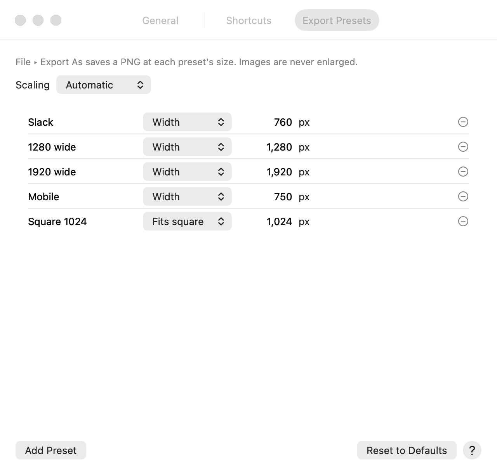

Save keeps your work. Export makes a copy for someone else. And Colorbee saves as you go, so
nothing is lost if you quit.
Formats
Format
Good for
What to know
PNG
Screenshots, pixel art, anything with transparency
Keeps every pixel exactly. The default.
JPEG
Photos
Smaller files, with a quality setting. Transparent areas become Color 2.
HEIC
Photos
Smaller than JPEG at the same quality.
TIFF
Print and archiving
Uncompressed or LZW.
GIF
Simple graphics
256 colors at most, and pixels are either clear or solid.
BMP
Older apps
No compression.
Colorbee project (.colorproj)
Work in progress
Keeps layers, adjustment layers and pages.
Colorbee also opens WebP images, but can't save them.
Image or project?
An image with one layer and one page saves as an ordinary image, such as a PNG. Once it has more layers, an adjustment layer, or more pages, it saves as a Colorbee project, so nothing is flattened away.
If you opened a PNG or JPEG and then added a layer, the original file is left alone, and the next save asks where to put the project. When you want a flat copy to share, use Export.
Save and Save As
Save (⌘S) saves the document. A new image asks for a name and format the first time.
Save As… (⇧⌘S) saves under a new name or in another format.
For new images, the Save panel starts on the format you used last.
Save and Export start in the folder the picture came from. A JPEG from Pictures that became a project is offered as a project in Pictures, next to the original.
Saving never clears undo: you can still undo past a save.
Export
File ▸ Export… (⌥⌘S) saves a copy in any format, combining the visible layers. Your document isn't changed. It has a quality setting for JPEG and HEIC, the compression for TIFF, and Include camera details for photos. It remembers your last choices.
Color keeps the picture's own colors (usually Display P3, from a Mac or iPhone screenshot), or converts them: sRGB for the web, Windows and older screens, or Display P3. Going to sRGB makes the most vivid reds and greens a little duller, since sRGB can't show them.
Limit file size to, for JPEG and HEIC: type a size, and Colorbee finds the best quality that fits, for a form that only takes files up to 200 KB, say. A KB is 1,000 bytes, as Finder counts. If even the lowest quality is too big, a message says the smallest size possible, and nothing is saved; make the picture smaller in pixels first with Export As. A very big picture can take a few seconds.
File ▸ Export As saves a PNG at a common size, such as Slack (760 px wide), 1280 or 1920 px, Mobile or Square 1024. The shape is kept, and a smaller image is never made bigger. Edit the list in Colorbee ▸ Settings ▸ Export Presets, where each preset also has its Color: keep the picture's own, or sRGB or Display P3.
File ▸ Export as PDF… saves every page as one PDF. See Pages and PDFs.

Settings ▸ Export Presets.
Share, print and more
Copy (⌘C) with nothing selected copies the whole image, to paste into another app.
File ▸ Share… sends it with AirDrop, Messages, Mail and more.
File ▸ Print… (⌘P) prints it, scaled to fit the page.
File ▸ Set as Desktop Picture uses it as your desktop picture.
In a document with pages, these use the page you're looking at.
Autosave and earlier versions
Colorbee saves your work as you go, the standard Mac way. When you quit and open Colorbee again, your windows come back as they were, including untitled ones.
File ▸ Revert To goes back to the last save, or to an earlier version with Browse All Versions.
File ▸ Duplicate opens a copy in a new window.
After a redaction, earlier versions still show what you hid. When you save, Colorbee offers to remove them. See Redact a screenshot.